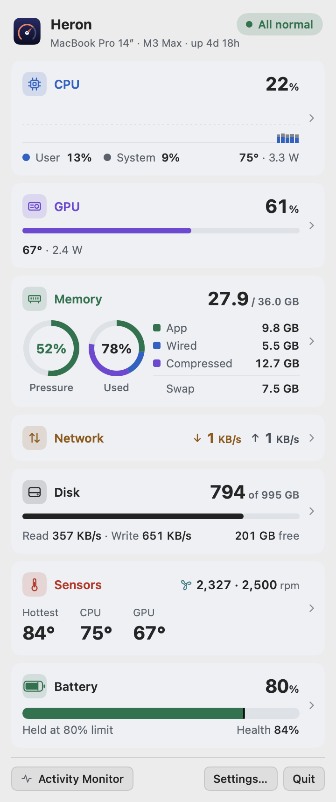
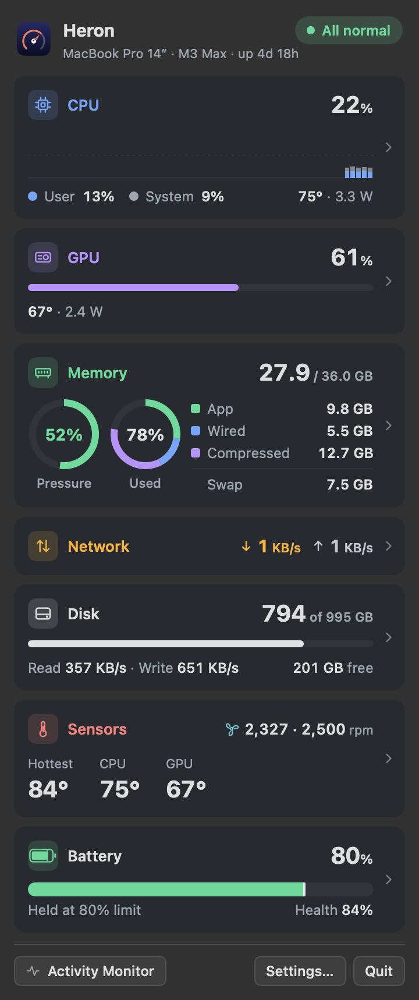
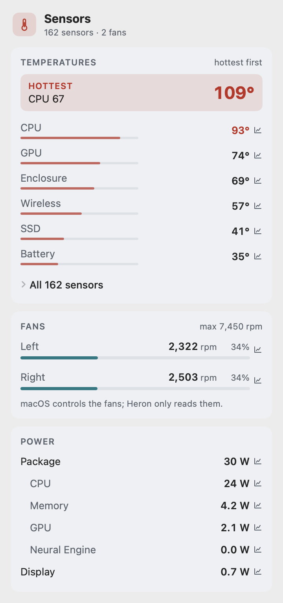
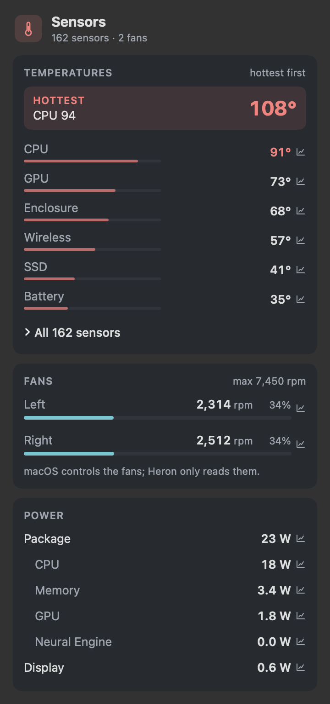
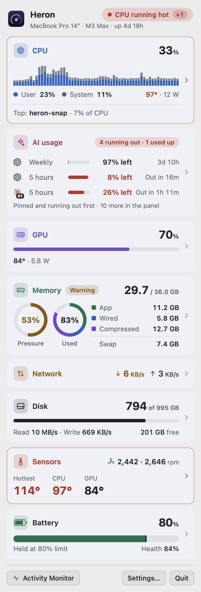
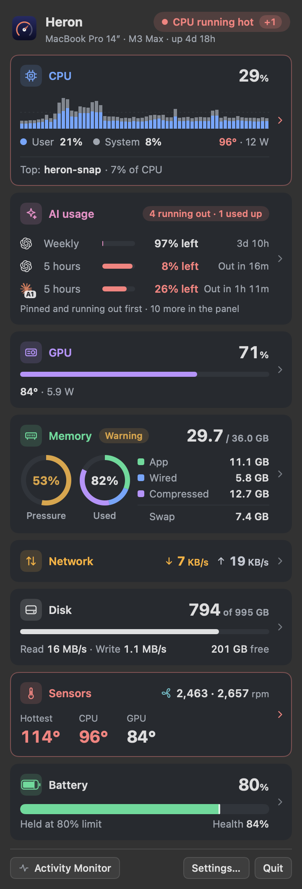

Heron is a menu bar monitor for Apple silicon Macs: CPU, GPU, memory, disk, network, temperatures, fans, power, battery, and how much of your Claude, ChatGPT or OpenCode plan is left. It only ever reads.


The Heron icon on its own. That is the default.
Every section is a card, in the order you choose. Rest the pointer on one, or use the arrow keys, and its detail panel opens beside the overview. Rows with a history open that history beside the panel, from the last minute to the last 24 hours.


Both screens rendered by Heron's own heron-snap on a MacBook Pro 14″ with an M3 Max, 24 November 2026. The numbers are that Mac's readings at the time.
Some readings have no public API on Apple silicon. Heron reads them the way macOS's own tools do, and never writes to them.
| Reading | Source | API |
|---|---|---|
| CPU per core | host_processor_info, performance and efficiency cores from IODeviceTree:/cpus | public |
| Memory | host_statistics64, swap from vm.swapusage, pressure from kern.memorystatus_level | public |
| Network | sysctl(NET_RT_IFLIST2), 64-bit counters | public |
| Battery | IOPSCopyPowerSourcesInfo and the AppleSmartBattery registry | public |
| GPU | IOAccelerator performance statistics | undocumented |
| Temperatures, fans | SMC keys (T…, F<n>Ac) | private |
| Power, CPU clocks | IOReport energy model and CPU state residency | private |
The public readings (CPU, memory, network, disk, battery) are cross-checked in Heron's tests against a second macOS API, so a parsing mistake shows up as a mismatch; fans and clocks are held to their own limits.


Claude, ChatGPT (Codex) and OpenCode: every limit with what's left, when it resets, and whether the current pace runs out first. The card shows the most urgent ones, or the ones you pick, and they can sit in the menu bar too.
This screen uses example accounts.
It never changes fan speeds, power settings or anything else on your Mac, so it needs no root helper and no background service. Your readings stay on your Mac. It goes online only for what you turn on: your AI plan usage, straight to each provider, and your public IP address when you ask for it.
For Apple silicon Macs with macOS 14 or later.
Every release and its notes: github.com/botjaeger/heron/releases
With Xcode 26 or later on an Apple silicon Mac, this builds Heron and installs it in Applications:
Source, issues and the developer docs: github.com/botjaeger/heron